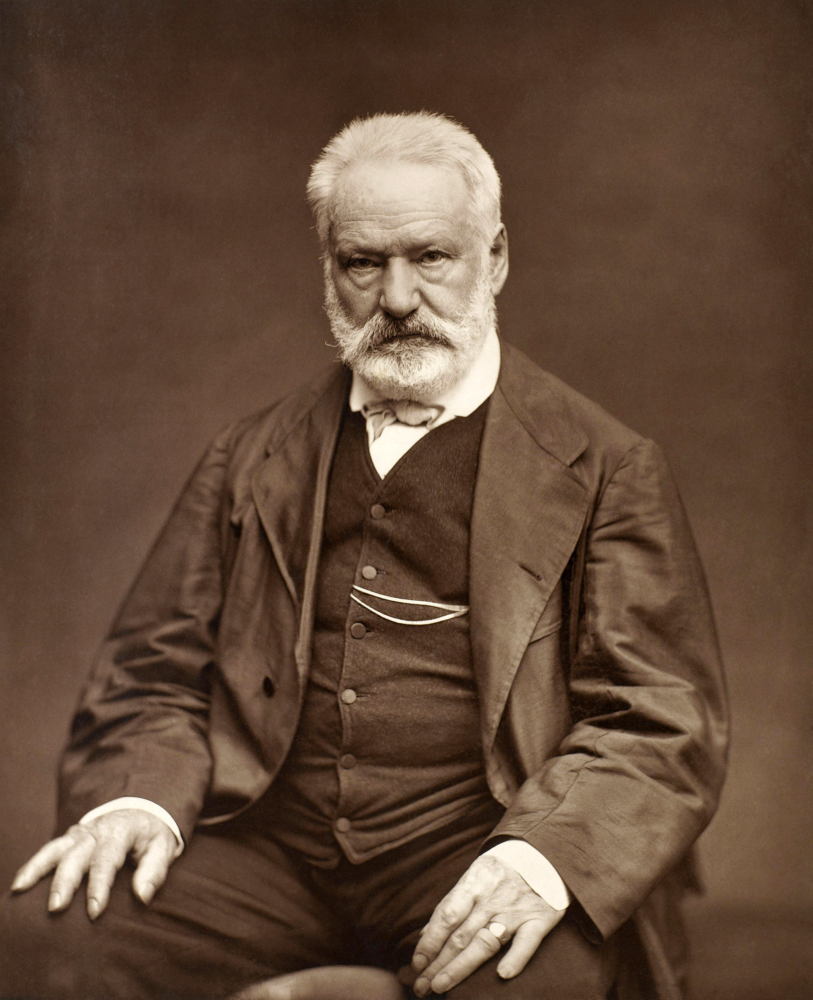

|
|
 |
| Sefiller | Victor Hugo |
Kitap Adı: Sefiller
Yazar: Victor Hugo
Çevirmen: Volkan Yalçıntoklu
Yoksul bir köylü çocuğu olan Jan Valjan,küçük yaşta annesini ve babasını kaybetti. Gidecek başka yeri olmadığı için yedi çocukla dul kalan ablasının yanına gitti. Yetim kalan çocuklara babalık, ablasına da yardım etti. Aradan geçen yıllar onu içine kapalı, sessiz, ama güçlü kuvvetli bir delikanlı yapmıştı. Çektiği sıkıntıdan yakınmıyor, yalnızca ablasının ve yedi çocuğunun karnını nasıl doyuracağını düşünüyordu. Bu hiç de kolay değildi maalesef...Jan Valjan'ın elinden her iş gelirdi. Yarıcılık, orakçılık, yanaşmahk ve bağ budayıcılığı... Ama bu işler de her zaman bulunamıyor, işsiz kaldığı zamanlar da oluyordu... Jan Valjan, kışın çok soğuk geçtiği ve kıtlık olduğu o yıl da işsiz kaldı. Kendini düşünmüyordu ama evde bir lokma ekmek bekleyen aç yedi çocuk vardı. Karınlarını doyurabilmek için hiçbir çare bulamayınca sonunda bir fırından ekmek çalmak zorunda kaldı.